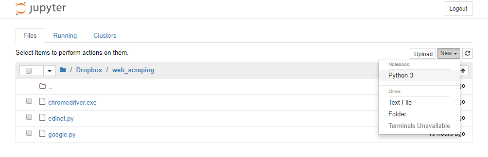

Python 事始め¶
Pythonとは？¶
すでに Python という言葉はどこかで聞いたことがあると思います。 Python は C や Fortran といったプログラミング言語の１つです。 Python は ABC という学習用プログラムからヒントを得て開発されました。 Python はプログラミング言語の中でも学習が容易で、またコーディングの容易さ、可読性にも優れています。 そうした理由から、Python は大学の授業でも多く使われています。
注釈
ちなみに、Python のシンボルは、ニシキヘビですが、これが名前の由来ではありません。 イギリスのコメディ番組「空飛ぶモンティ・パイソン」が由来です。 プログラミングの書籍などを多く出版している O'Reilly の書籍の表紙には動物が描かれていることがほとんどですが、 そこで Python の書籍を出す際、ニシキヘビをシンボルにしたそうです。
Python と R¶
エコノメトリクスでよく用いられるプログラミング言語としては、R が有名かと思います。 R は技術計算用の言語で、S というプログラミング言語をもとに作られました。 R と Python のどちらを使うかはよく議論の対象になっています。 私見では、データ分析に関していうと、Python と R のどちらを使ってもよいと思います。 というのも、Python で開発された便利な機能は誰かが R で使えるようにしており、またその逆も多くあるため、これら２つは互いに良い影響を与え合っています。
ただし、Python と R で違いを挙げるとすれば、次のようになります。
Python の開発は 機械学習 、特に Deep Learning、 方面に秀でています。 例えば、機械学習・Deep Learning 用のパッケージとして、Tensorflow, Chariner などがあります。 最新の Deep Learning パッケージは、まず Python のパッケージとして出されることが多いです。
R の開発は 統計学 方面に秀でています。 最先端の論文で提唱されている統計手法の多くは R で開発されています。
Python のインストール¶
データ分析用に Python を使う場合、Anaconda の Python ディストリビューションからインストールするとよいでしょう。 Python でデータ分析をする場合は、様々なパッケージを用いるため、Anaconda からインストールすれば、自分でわざわざパッケージをインストールする必要はありません。 現在、Python にはバージョン 2 と 3 があります。 このサイトでは、Python 3 を使うため、そちらをインストールして下さい。
Python の起動¶
Python をインストールしたら、Python を起動しましょう。
コマンドプロンプト( Windows ) / ターミナル( Mac )を立ち上げ、 python と打ってみましょう。
次のような結果が表示されるはずです。
Python 3.6.1 |Anaconda 4.4.0 (64-bit)| (default, May 11 2017, 13:25:24) [MSC v.1900 64 bit (AMD64)] on win32
Type "help", "copyright", "credits" or "license" for more information.
>>>
立ち上がらない場合、パスの設定ができていないと思われます。
システムのプロパティ → システム情報 → 設定の変更 → 詳細設定 → 環境変数 → システムの環境変数の Path → 新規 をクリックします。 以下の文字列をそれぞれ追加します。
C:\Users\ユーザー名\Anaconda3””
C:\Users\ユーザー名\Anaconda3\Scripts
C:\Users\ユーザー名\Anaconda3\Library\bin
ユーザー名は、自分のユーザー名（例：hoge）に置き換えてください。
Windows 10 以前の場合、Path はセミコロン ; で区切ります。
Python を終了する場合は、 quit() と打ちます。
パッケージのインストール¶
Python では、様々な人たちが Python に便利なパッケージ( R でいう library, Stata でいう ado ファイル )を開発しています。
このパッケージをインストールするのに便利なコマンド pip が用意されています。
Web スクレイピングに便利なパッケージである、requests をインストールしてみましょう。
コマンドプロンプトに次のコマンドを打ちます。
pip install requests
また、Anaconda から Python をインストールした場合には、 conda が用意されています。
conda を用いてパッケージをインストールする場合は、次のようになります。
conda install requests
注釈
pip, conda を使う場合、Python を一旦閉じるか、別のコマンドプロンプトから行ってください。
また、 conda を使える場合は、まずこちらを使った方がよいでしょう。
IPython¶
データの整理、分析は多くの場合、試行錯誤の連続です。
このようなデータ分析の過程をスムーズに進めるためにに、Python をよりデータ分析に使いやすくした IPython というものが開発されています。
コマンドプロンプトに ipython と打ってみましょう。次のような画面が表示されるはずです。
Python 3.6.1 |Anaconda 4.4.0 (64-bit)| (default, May 11 2017, 13:25:24) [MSC v.1900 64 bit (AMD64)]
Type "copyright", "credits" or "license" for more information.
IPython 5.3.0 -- An enhanced Interactive Python.
? -> Introduction and overview of IPython's features.
%quickref -> Quick reference.
help -> Python's own help system.
object? -> Details about 'object', use 'object??' for extra details.
In [1]:
Jupyter Notebook¶
長いコードを書く場合、コマンドプロンプト上で行うのは面倒でしょう。
その場合には、統合開発環境( IDE )を使うとよいでしょう。
Jupyter Notebook は IDE の１つで、技術計算用ソフトウェア Mathematica ライクな開発環境を提供します。
Jupyter Notebook の起動は、Jupyter Notebook というアプリを起動するか、コマンドプロンプトに jupyter notebook と打ちます。
次のような画面がブラウザに表示されますので、適当なフォルダで New → Python 3 を押すと、Notebook が新規に作られます。
Jupyter Notebook は次のようなものです。

画面一番上の Untitle のところをクリックして、Notebook の名前を付けましょう。
In[] の中にコードを書いていきます。
In[] の中をセルと呼びます。
をクリックするか、または Ctrl + Enter を打つと、セル内のコードが実行されます。
さて、これで準備は整いました！ 次から Jupyter Notebook を用いて Python について学んでいきましょう。